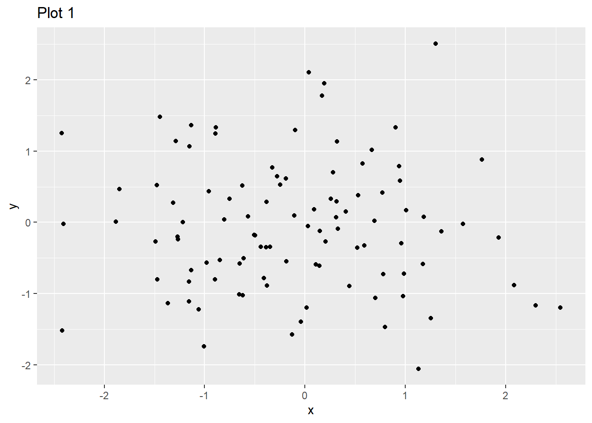
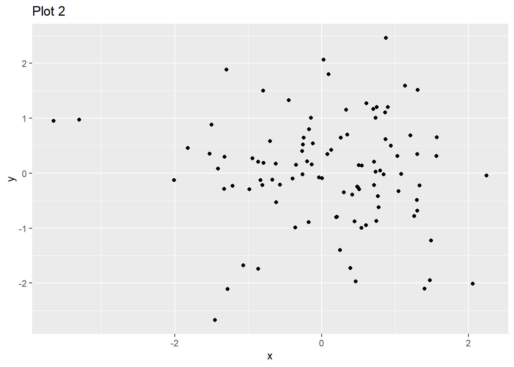
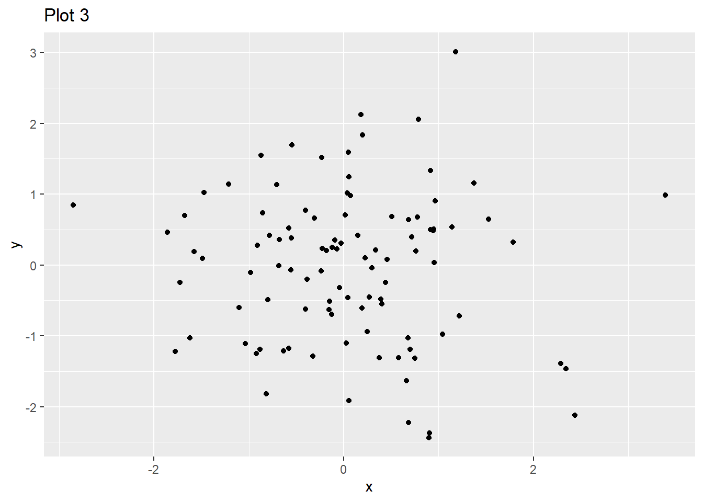

# Example of a for loop in R
for (iteration in 1:5) {
print(paste("Iteration number:", iteration))
}[1] "Iteration number: 1"
[1] "Iteration number: 2"
[1] "Iteration number: 3"
[1] "Iteration number: 4"
[1] "Iteration number: 5"Loops in R allow us to execute a block of code multiple times. They are useful when dealing with repetitive tasks such as performing same calculations repeatedly. In this document, we will explore the mechanics of loops in R and discuss for what it can be used.
A loop typically consists of three main components:
R supports several types of loops, with for loops being the most common.
for Loop in R# Example of a for loop in R
for (iteration in 1:5) {
print(paste("Iteration number:", iteration))
}[1] "Iteration number: 1"
[1] "Iteration number: 2"
[1] "Iteration number: 3"
[1] "Iteration number: 4"
[1] "Iteration number: 5"In this example: - The variable iteration takes values from 1 to 5. - The print() function outputs the current value of iteration. - The loop runs five times, once for each value in 1:5.
We can iterate along the vectors
fruits <- c("apple", "banana", "cherry")
for (fruit in fruits) {
print(fruit)
}[1] "apple"
[1] "banana"
[1] "cherry"When using a for loop, the loop variable (e.g., fruit in the example above) is assigned in the global environment, meaning it remains available even after the loop has finished executing.
print(fruit)[1] "cherry"Here, fruit retains its last assigned value ("cherry") in the global environment. This behavior is important to consider when working with loops in R, as it can lead to unintended side effects if the loop variable is used later in the code.
Often it is useful to iterate accross the indices instead of values of the vector:
numbers <- c(10, 20, 30)
seq_along(numbers)[1] 1 2 31:length(numbers)[1] 1 2 3for (index in seq_along(numbers)) {
print(paste("Index:", index, "Value:", numbers[index]))
}[1] "Index: 1 Value: 10"
[1] "Index: 2 Value: 20"
[1] "Index: 3 Value: 30"Loops are like Las Vegas - what happens in a for loops, stays in a for loop …unless we store it somewhere
squares <- numeric(5)
for (i in 1:5) {
squares[i] <- i^2
}
print(squares)[1] 1 4 9 16 25if..else in a Loopfor (i in 1:5) {
if (i %% 2 == 0) {
print(paste(i, "is even"))
} else {
print(paste(i, "is odd"))
}
}[1] "1 is odd"
[1] "2 is even"
[1] "3 is odd"
[1] "4 is even"
[1] "5 is odd"next and breakThere are some statements we can use to control the for loop behaviour
for (i in 1:10) {
if (i %% 2 == 0) next # Skip even numbers
if (i > 7) break # Stop loop if i > 7
print(i)
}[1] 1
[1] 3
[1] 5
[1] 7for loops# Outer loop
for (i in 1:3) {
# Inner loop
for (j in 1:3) {
print(paste("i =", i, "and j =", j))
}
}[1] "i = 1 and j = 1"
[1] "i = 1 and j = 2"
[1] "i = 1 and j = 3"
[1] "i = 2 and j = 1"
[1] "i = 2 and j = 2"
[1] "i = 2 and j = 3"
[1] "i = 3 and j = 1"
[1] "i = 3 and j = 2"
[1] "i = 3 and j = 3"while Loopcounter <- 1
while (counter <= 5) {
print(paste("Counter:", counter))
counter <- counter + 1
}[1] "Counter: 1"
[1] "Counter: 2"
[1] "Counter: 3"
[1] "Counter: 4"
[1] "Counter: 5"apply() Family of FunctionsThe apply() family provides alternatives to loops for applying functions over elements of vectors, matrices, or lists.
data <- USArrests[1:10, c("Murder", "Assault", "Rape")]
sum_by_row <- apply(data, 1, sum) # Sum over rows
sum_by_col <- apply(data, 2, sum) # Sum over columnsdf_list <- list(iris, USArrests, mtcars )
lapply(df_list, function(df) nrow(df) )[[1]]
[1] 150
[[2]]
[1] 50
[[3]]
[1] 32sapply(df_list, function(df) nrow(df) )[1] 150 50 32library(ggplot2)Warning: package 'ggplot2' was built under R version 4.4.2for (i in 1:3) {
df <- data.frame(x = rnorm(100), y = rnorm(100))
p <- ggplot(df, aes(x, y)) + geom_point() + ggtitle(paste("Plot", i))
print(p)
}


file_list <- list.files(path = "data", pattern = "*.csv", full.names = TRUE)
for (file in file_list) {
data <- read.csv(file)
print(paste("Processing file:", file))
}Loops in R are powerful tools for iterating over data structures and automating repetitive tasks. However, it’s crucial to remember that the loop variable remains in the global environment, which may affect later computations. Understanding these mechanics helps in writing efficient and predictable R code.
?for in R Documentation